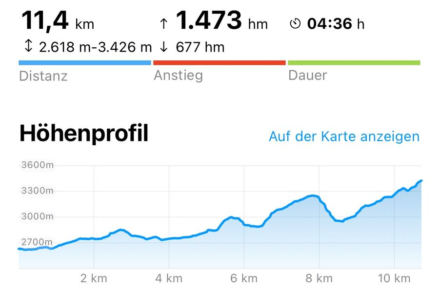
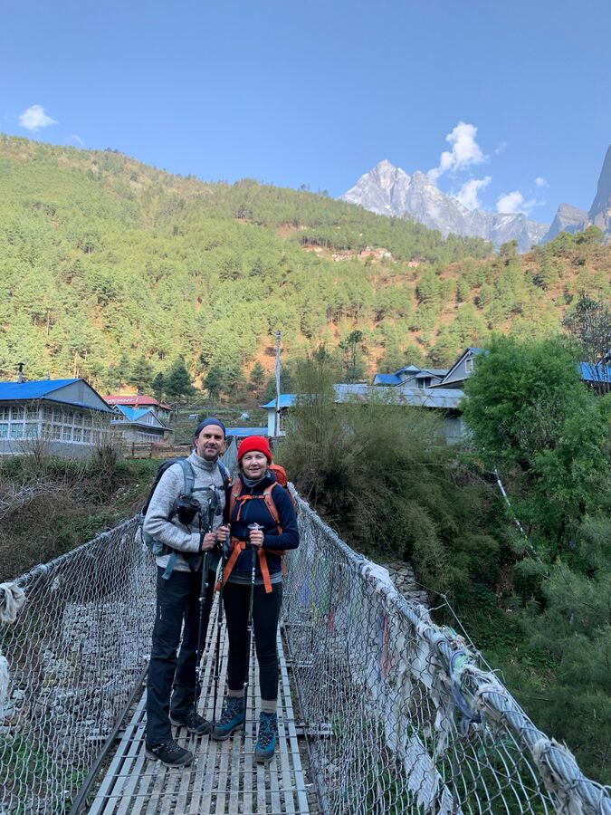
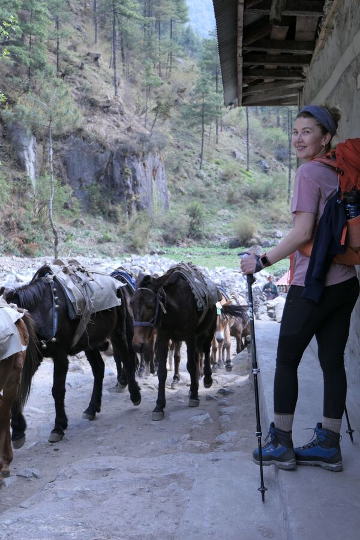
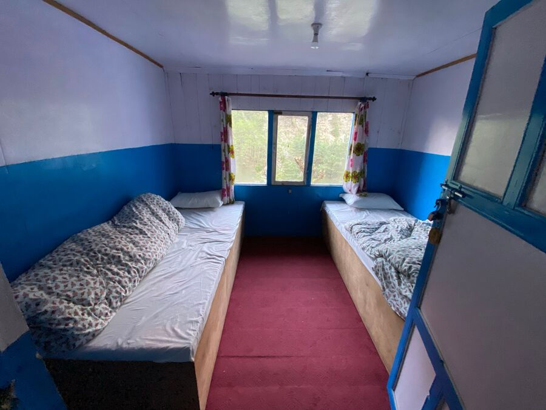
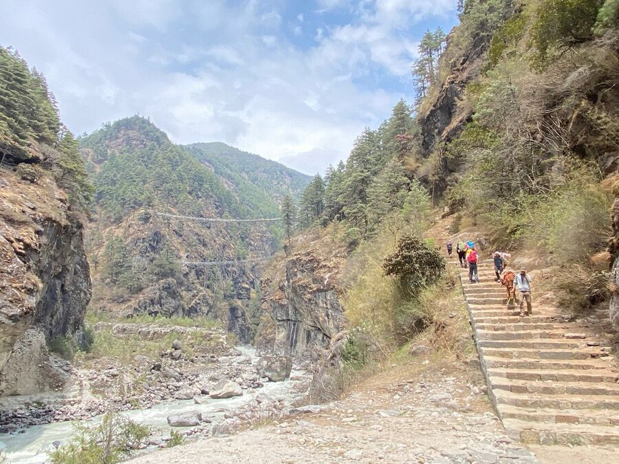
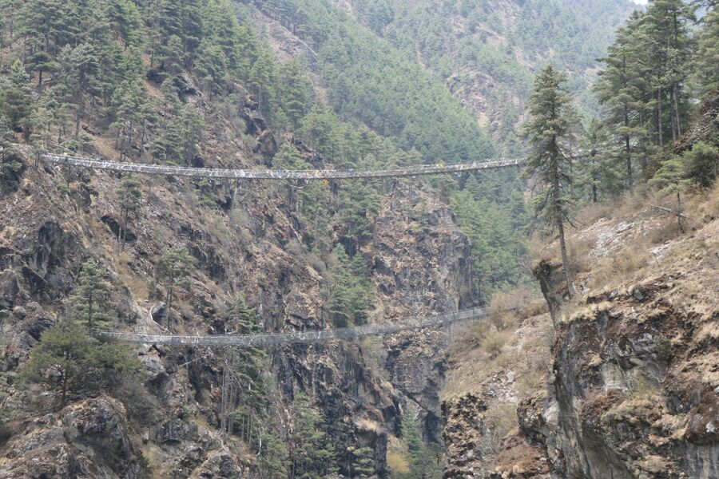
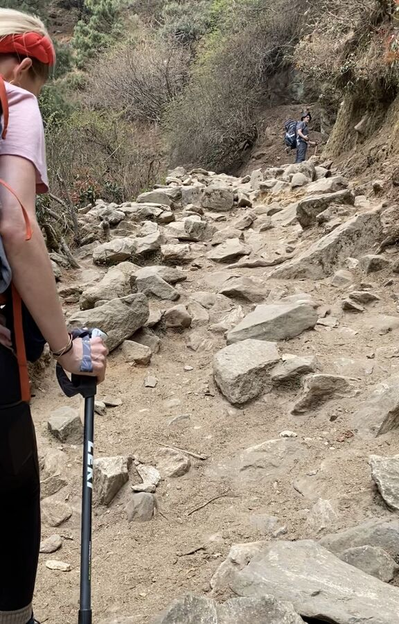
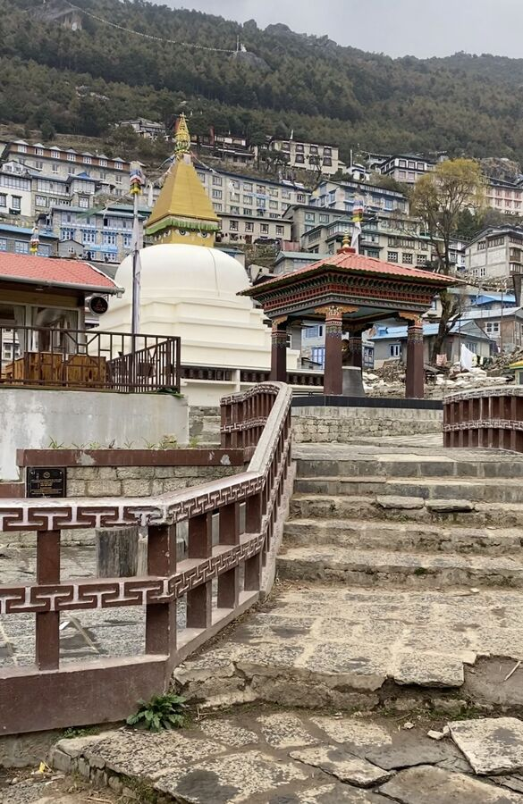

Namche Bazar ist sozusagen die Hauptstadt der Khumbu-Region. Dort muss quasi jeder Trekker durch. Daher gibt es in Namche Bazar noch einmal alles, was der gemeine Trekker brauchen könnte: Ausrüstung, Kleidung, Souvenirs, Lebensmittel und natürlich auch Cafés, Bäckereien und einen Irish Pub. Klar. Und das alles auf 3.400m Höhe. Zur Erinnerung: Die Zugspitze ist 2.962m hoch.
Die Strecke vom Startpunkt, dem Flughafen Lukla, nach Namche Bazar wird normalerweise in 2 Etappen absolviert. Die erste hatten wir gestern erledigt. Heute ging es dann von Phakding aus nach Namche Bazar. Zu überwinden waren rund 800 Höhenmeter.

Leider verteilen sich diese 800 Höhenmeter nicht gleichmäßig auf die ungefähr 11 Kilometer lange Strecke. Denn man überquert den Fluss Dudh Koshi ganze 5 Mal auf diesen langen Hängebrücken aus Metall. Das bedeutet, dass man immer wieder fast auf Flusshöhe absteigen muss, wenn man gerade mit Mühe etwas Höhe gut gemacht hat. So sind wir eigentlich fast 1.500m hochgestiegen, aber 700m abgestiegen.

Wenn man bedenkt, dass wir uns ungefähr in der Höhe der höchsten Skigebiete in Österreich befinden, sieht es hier eher aus wie in einem Waldgebiet im Mittelgebirge.
Inzwischen sind einige Wege befestigt worden. Ungefähr 80 Prozent sind aber noch Sand, Felsen und Steine. Es gibt eigentlich kaum einen Abschnitt, der glatt ist. Überall wachsen die Felsen förmlich aus dem Weg, umringt von kleinen und größeren Geröll. Und sowohl beim Auf- als auch beim Abstieg kämpft man mit der unterschiedlichen Tritthöhe dieser natürlichen Stufen.
Erschwerend kommt hinzu, dass einem immer wieder Esel- oder Jopke-Treks entgegenkommen. Mitten im Gefälle. Oder die Lastenträger wollen vorbei, weil sie halt doppelt so schnell sind, obwohl sie bis zu 100 Kilo tragen.

Was heute geschah …
Der Tag heute fing sehr, sehr kalt an. Wir hatten ganz schön im Bett gefroren. Gefühlt waren bei uns im Zimmer so ca. 3 Grad. Wir hatten nur mit normalem Bettzeug geschlafen. Mit dem Kopf zur zugigen Fluss-Seite, von der uns nur eine dünne Spanplatte trennte. Mit Mütze ging es dann so gerade noch. Die Katzenwäsche gab es dann am Waschbecken im Flur. Und das alles um 6 Uhr.

Das Frühstück um 7 Uhr war ordentlich. Ich hatte einen Pancake mit Sirup, Yesim Porridge mit Apfel.
Um 7:30 Uhr ging es los Richtung Namche Bazar. Der Weg ging wie gesagt bergauf und bergab, durch viele kleinere Örtchen, die meist nur auf ein oder zwei Häusern bestehen.
Das Highlight waren die 5 Hängebrücken und insbesondere die letzte, die Hillary-Brücke auf 2.935m – benannt nach Sir Edmund Hillary, der am 29.05.1953 als Erster den Mount Everest bestiegen hatte.

Rechts der Anstieg zur Brücke.

Die Brücke führt rd. 200 Meter über dem Erdboden über den Fluss Dudh Koshi. Vorher muss man jedoch vom Flussniveau in kurzer Distanz auf diese 200 Meter kommen. Das ist schon ein Akt. Aber der Blick auf und von der Brücke entschädigt für die Strapazen. Heute war es ziemlich windig und uns war beim Darüberlaufen ganz schön mulmig.
Nach der Brücke geht es dann ca. 3,5 Kilometer bis Namche Bazar nur noch bergauf. Langsam macht sich die dünnere Luft bemerkbar. Kommt man mal aus dem Tritt oder muss schnell drei, vier größere Schritte machen, kommt man aus der Puste.
Yeşim hat diese ganze Strecke wirklich meisterhaft absolviert. Sie ging meistens voran und gab die Geschwindigkeit vor. Ich bin zunächst etwas verhalten unterwegs, weil ich meinem linken Knie noch nicht ganz traue. Aber auch die Schritte nach unten spüre ich stark im Knie. Ich möchte auf Nummer sicher gehen und ohnehin haben wir ja keine Eile.

Was mir im Vergleich zu 2009 aufgefallen ist, sind die sehr vielen neuen Lodges und gut befestigten Streckenabschnitte. Dennoch ist alles sehr kleinteilig gehalten und wird von der örtlichen Bevölkerung betrieben. Man kann nur hoffen, dass das so bleibt und sich nicht irgendwann große Hotelketten durchsetzen und den einfachen Herbergen die Kunden abspenstig machen.

Namche Bazar ist auch völlig anders als 2009. Nach dem schlimmen Erdbeben 2015, bei dem das Epizentrum in Namche Bazar lag, wurde viel zerstört. Nun ist alles wieder aufgebaut und noch größer. Morgen werden wir Zeit haben, uns die Stadt anzusehen.
Denn morgen ist der erste Akklimatisierungstag, bei dem man höher aufsteigt, dann aber wieder in tieferer Höhe schläft. So werden wir auf ca. 3.800m klettern und dann wieder nach Namche Bazar zurückkehren. Hier werden wir dann die 2. Nacht verbringen. Übrigens haben wir jetzt ein Zimmer mit Dusche und WC. Auch wenn die Dusche aktuell kein warmes Wasser hat. Hoffentlich gibt es morgen Sonne, damit das Wasser warm wird.
Morgen gibt es ausnahmsweise mal Frühstück erst um 7:30 Uhr. Trotzdem geht es jetzt um fast 23 Uhr ins Bett. Gute Nacht.